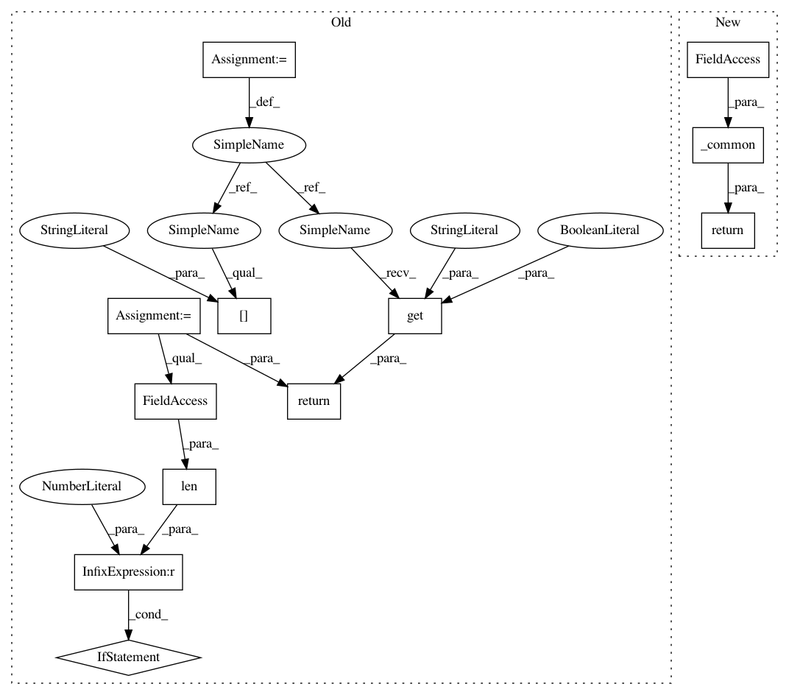

d03bee8101a988d23b2bf46ec78904b4efbdea94,onnx_tf/handlers/backend/max_pool.py,MaxPool,version_8,#Any#Any#,27
Before Change
@classmethod
def version_8(cls, node, **kwargs):
if len(node.outputs) == 1:
pool_type = "MAX"
pool_func = partial(tf.nn.pool, pooling_type="MAX")
else:
pool_type = "MAX_WITH_ARGMAX"
pool_func = tf.nn.max_pool_with_argmax
return cls.pool(node, kwargs["tensor_dict"], pool_func, pool_type,
kwargs.get("strict", True))
@classmethod
def version_10(cls, node, **kwargs):
pool_type = "MAX" if len(node.outputs) == 1 else "MAX_WITH_ARGMAX"
After Change
@classmethod
def version_8(cls, node, **kwargs):
return cls._common(node, **kwargs)
@classmethod
def version_10(cls, node, **kwargs):
return cls._common(node, **kwargs)
In pattern: SUPERPATTERN
Frequency: 3
Non-data size: 12
Instances
Project Name: onnx/onnx-tensorflow
Commit Name: d03bee8101a988d23b2bf46ec78904b4efbdea94
Time: 2020-03-09
Author: sdmonov@us.ibm.com
File Name: onnx_tf/handlers/backend/max_pool.py
Class Name: MaxPool
Method Name: version_8
Project Name: onnx/onnx-tensorflow
Commit Name: d03bee8101a988d23b2bf46ec78904b4efbdea94
Time: 2020-03-09
Author: sdmonov@us.ibm.com
File Name: onnx_tf/handlers/backend/max_pool.py
Class Name: MaxPool
Method Name: version_11
Project Name: onnx/onnx-tensorflow
Commit Name: d03bee8101a988d23b2bf46ec78904b4efbdea94
Time: 2020-03-09
Author: sdmonov@us.ibm.com
File Name: onnx_tf/handlers/backend/max_pool.py
Class Name: MaxPool
Method Name: version_10